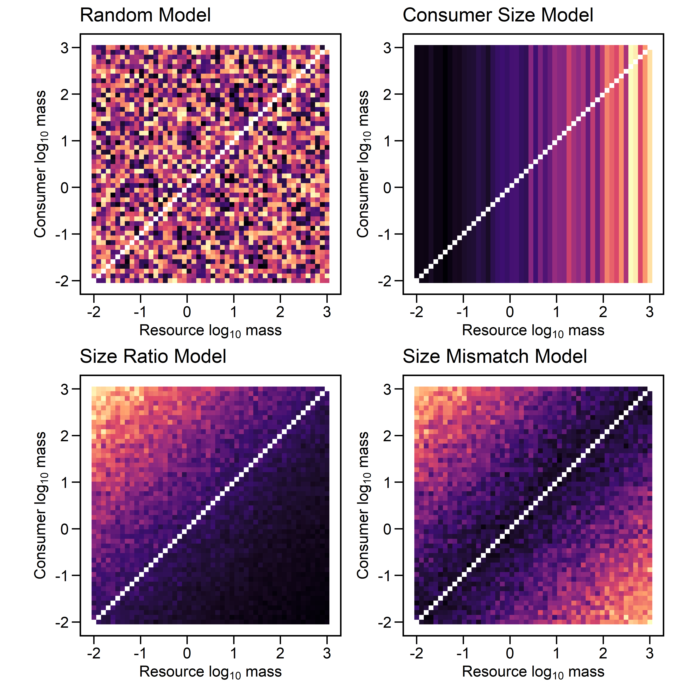
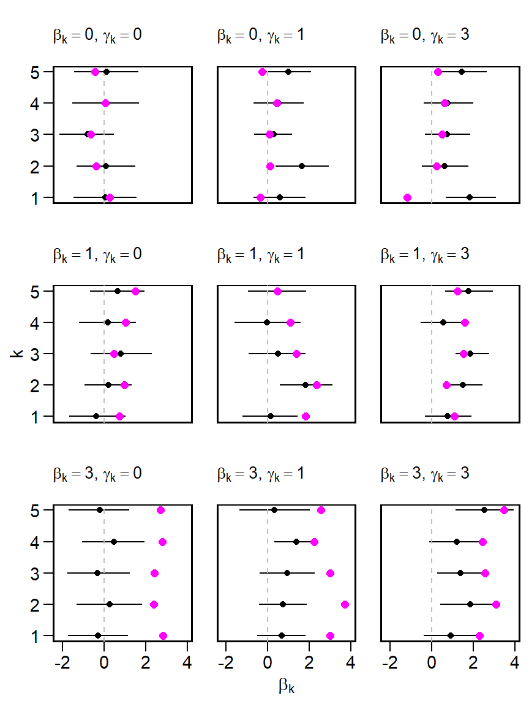
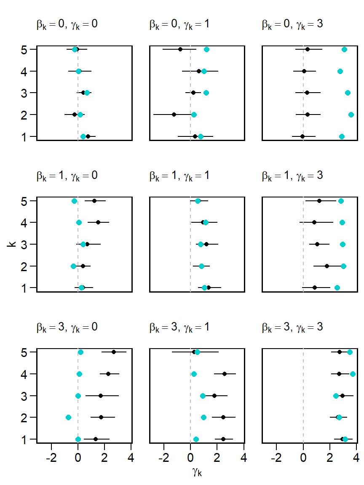
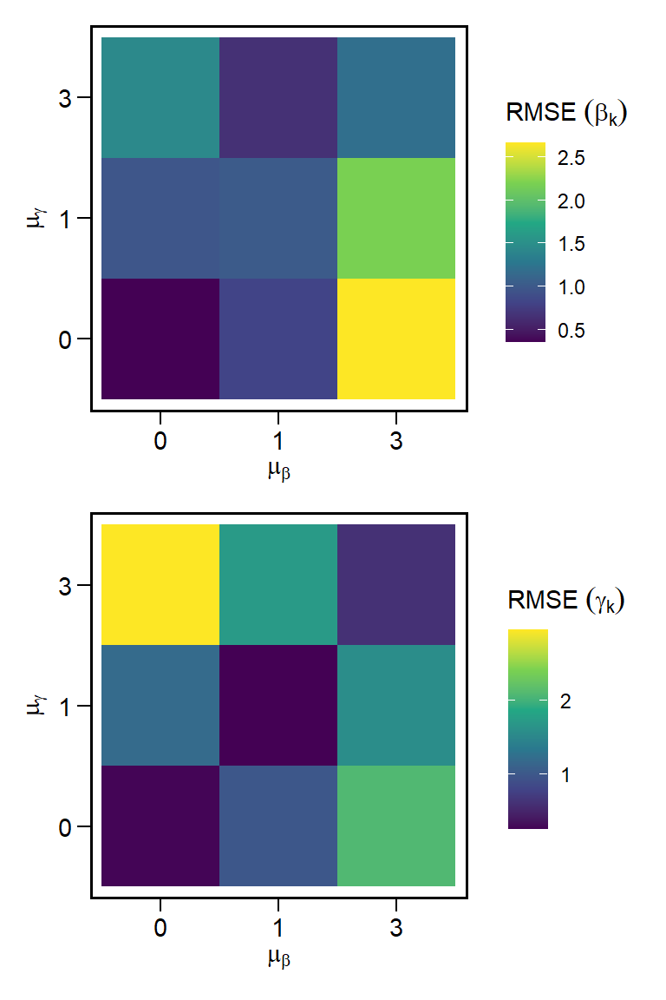
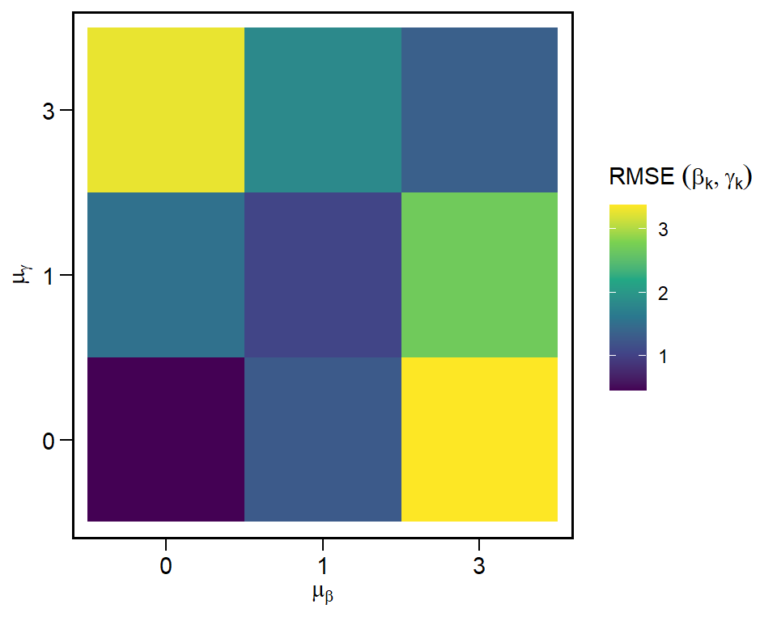

# Setup
set.seed(666)
inv_logit = function(x) exp(x) / (1 + exp(x))
# Parameters
N = 50
mu_p = -2
sigma_p = 0.25
nu_k = 1
# Body mass
mass = exp(seq(log(0.01), log(1000), length.out = N)) # mass on raw scale
M = log10(mass) # log10 body mass
# Pairwise matrices
Bi = matrix(M, N, N) # consumer
Bj = t(Bi) # resource
# Covariates
ratio = Bi - Bj
mismatch = abs(Bi - Bj)
# Noise
eps = matrix(rnorm(N*N, 0, sigma_p), N, N)
# (1) Consumer Size Model
pM = inv_logit(mu_p + nu_k * M + rnorm(N, 0, sigma_p))
pM_mat = matrix(pM, N, N, byrow = TRUE)
diag(pM_mat) = NA
# (2) Size Ratio Model
pR_mat = inv_logit(mu_p + nu_k * ratio + eps)
diag(pR_mat) = NA
# (3) Size Mismatch Model
pA_mat = inv_logit(mu_p + nu_k * mismatch + eps)
diag(pA_mat) = NA
# (4) Random Model - uniform random probabilities
p_rand_mat = matrix(runif(N * N, min = 0, max = 1), N, N)
diag(p_rand_mat) = NA
# Data for plotting
dat = data.frame(
consumer_mass_log10 = as.vector(Bi),
resource_mass_log10 = as.vector(Bj),
size_ratio = as.vector(ratio),
size_mismatch = as.vector(mismatch),
p_consumer = as.vector(pM_mat),
p_ratio = as.vector(pR_mat),
p_mismatch = as.vector(pA_mat),
p_random = as.vector(p_rand_mat)
)Introduction
In the previous post, we discussed how the probability of a feeding link between two species depends in part on the probability of detecting the link during the sampling effort. Accounting for this is an important step toward understanding whether the food web structure we are studying is due to ecological processes that underlie community assembly, or some sampling bias (or both).
As a reminder, our existing model treats the probability of an observed link in a web (\(A_{ij,k}\)) as
Detection Model
\[ \begin{align} A_{ij,k} &\sim \text{Bernoulli}(q_{ij,k}) \\ q_{ij,k} &= p_k \pi_{ij,k} \\ p_k &= \text{logit}^{-1}(\mu_{p} + \sigma_p p^{(z)}_k) \\ \pi_{ij,k} &= \text{logit}^{-1}(\alpha_k + u_{i,k} + v_{j,k}) \\ \alpha_k &= \mu_{\alpha} + \sigma_{\alpha} \alpha^{(z)}_k \\ u_{i,k} &= \sigma_u u^{(z)}_{i,k} \\ v_{j,k} &= \sigma_v v^{(z)}_{j,k} \\ p^{(z)}_k, \alpha^{(z)}_k, u^{(z)}_{i,k},v^{(z)}_{j,k} &\sim \mathcal{N}(0,1) \\ \sigma_p,\sigma_{\alpha},\sigma_u, \sigma_v &\sim \text{Exponential}(1) \end{align} \]
| Notation | Meaning |
|---|---|
| \(\pi_{ij,k}\) | true ecological interaction probability |
| \(p_k\) | detection probability for web \(k\) |
| \(q_{ij,k}\) | probability of observing interaction |
| \(\alpha_k\) | baseline interaction rate in web \(k\) |
| \(u_{i,k}\) | consumer \(i\) feeding generality |
| \(v_{j,k}\) | resource \(j\) feeding vulnerability |
| \(\mu_p\) | overall mean detection |
| \(\sigma_p\) | between-web variation in detection |
| \(\mu_{\alpha}\) | overall mean interaction rate |
| \(\sigma_{\alpha}\) | between-web variation in interaction rate |
| \(*^{(z)}\) | standardized, non-centered latent deviations |
Though this is an useful advance, our detection probability is just another probability that we estimate. It is treated as a latent, random effect that accounts for false negatives. However, it might be reasonable to assume that detection is non-random: species with particular traits may be more readily observed. For example, if larger species are easier to sample, then we would detect their diets more often. To incorporate this, we make an adjustment to Equation 3. We have a few options here. First, let \(M_{i,k}\) and \(M_{j,k}\) be the log body masses of consumer \(i\) and resource \(j\).
We generate the raw body masses as \(\text{exp}(\mathcal{N}(\mu_M, \ \sigma_M))\) only to transform it back using \(\text{log}_{10}(M_{i,k})\).
Consumer Size Model
We define a parameter \(\gamma_k\) which controls the effect of consumer body mass on detection.
\[ \begin{align} \text{logit}(p_{i,k}) = \mu_p + \gamma_k M_{i,k} + \sigma_p p^{(z)}_{i,k} \end{align} \]
When \(\gamma_k > 0\), the feeding links of larger species are detected more often. This model creates a serious confound: body mass effect on links and detection are competing, potentially making the probability \(q_{ij,k}\) unidentifiable.
Size Ratio Model
An second approach that aligns with food web theory (Allesina 2011) might hypothesize that it is the ratio of \(M_i\) to \(M_j\) that influences detection. Since both covariates are on a log scale, we compute the difference between them and estimate the effect \(\nu_k\).
\[ \begin{align} \text{logit}(p_{ij,k}) &= \mu_p + \gamma_k (M_{i,k} - M_{j,k}) + \sigma_p p^{(z)}_{ij,k} \end{align} \]
This does not magically remove the identifiability problem but it slices the variation differently such that we can attribute link variation associated with size ratio vs. detection that is associated with consumer body size.
Size Mismatch Model
Similar to the size-ratio model, a third option would be to focus on the absolute difference between the species body sizes. This means something quite difference biologically.
\[ \begin{align} \text{logit}(p_{ij,k}) &= \mu_p + \gamma_k |M_{i,k} - M_{j,k}| + \sigma_p p^{(z)}_{ij,k} \end{align} \]
Each of the detection mechanisms contain very different assumptions about how detection scales body size.
- Consumer Size Model: This individual-level mechanism suggests that probability scales with the body size of the consumer, regardless of the size of the prey. Large predators are easier to observe and thus their feeding links are easier to detect.
- Size Ratio Model: This edge-level mechanisms suggests that the probability of observing a feeding link depends on the ratio of consumer to resource body size. Observing large predators feeding on smaller prey are more likely, whereas a predator which is much smaller than it prey are ecological unusual and difficult to detect. The detection probability of such unusual events is proportionally lower.
- Size Mismatch Model: This edge-level mechanism assumes that detection probability depends on the absolute difference between predators and prey. This mechanism does not imply that size mismatches are uncommon, only that such interactions leave evidence that is more difficult to detect.
Simulation
To further investigate these mechanisms, we can simulate their effect on detection probability.
First, we can consider the matrices produced by these models. Each cell contains the probability of detecting an interaction between the two species.
# Function to create a raster plot
library(latex2exp)
plot_raster = function(df, zvar, title) {
ggplot(df, aes(x = resource_mass_log10, y = consumer_mass_log10, fill = .data[[zvar]])) +
geom_tile() +
scale_fill_viridis_c(na.value = "white", name = zvar, option = 'A') +
coord_fixed() +
labs(
x = TeX("Resource ${log}_{10}$ mass"),
y = TeX("Consumer ${log}_{10}$ mass"),
title = title
) +
theme(legend.position = 'none')
}
# Plot each model
p1 = plot_raster(dat, "p_random", "Random Model")
p2 = plot_raster(dat, "p_consumer", "Consumer Size Model")
p3 = plot_raster(dat, "p_ratio", "Size Ratio Model")
p4 = plot_raster(dat, "p_mismatch", "Size Mismatch Model")
(p1 + p2) / (p3 + p4)
Focusing on Size-Ratio
To probe into the implications this model and potential confounds, we will focus on the size-ratio model. Let \(M_{i,k}\) and \(M_{j,k}\) be the \(\text{log}_{10}\) body masses of the consumer and resource species, respectively.
Then the model is
\[ \begin{align} A_{ij,k} &\sim \text{Bernoulli}(q_{ij,k}) & &\text{Observed link} \\ q_{ij,k} &= \pi_{ij,k} \cdot p_{ij,k} & &\text{True link } \times \text{Detection probability} \\ \text{logit}(\pi_{ij,k}) &= \alpha_k + u_{i,k} + v_{j,k} + \beta_k M_{i,k} & &\text{True link probability} \\ \text{logit}(p_{ij,k}) &= \mu_p + \gamma_k(M_{i,k} - \ M_{j,k}) & &\text{Detection probability} \end{align} \]
Let’s imagine a \(3 \times 3\) matrix of simulation scenarios for different combinations of \(\beta_k\) and \(\gamma_k\).
| Null | Weak | Strong | |
| Null | \(\gamma_k = 0\), \(\beta_k = 0\) | \(\gamma_k = 0\), \(\beta_k = 1\) | \(\gamma_k = 0\), \(\beta_k = 3\) |
| Weak | \(\gamma_k = 1\), \(\beta_k = 0\) | \(\gamma_k = 1\), \(\beta_k = 1\) | \(\gamma_k = 1\), \(\beta_k = 3\) |
| Strong | \(\gamma_k = 3\), \(\beta_k = 0\) | \(\gamma_k = 3\), \(\beta_k = 1\) | \(\gamma_k = 3\), \(\beta_k = 3\) |
For each of these combinations, we simulate an observed food web and then fit the same stan model.
data {
int<lower=1> N_cons;
int<lower=1> N_res;
int<lower=1> K;
matrix[N_cons,K] M;
// observed adjacency
array[N_cons, N_res, K] int<lower=0, upper=1> A;
}
parameters {
// body mass slopes
vector[K] beta_k;
// body mass detection
vector[K] gamma_k;
// non-centered latent effects
vector[K] alpha_z;
matrix[N_cons, K] u_z;
matrix[N_res, K] v_z;
// hyperparameters
real mu_p;
real mu_alpha;
real<lower=0> sigma_alpha;
real<lower=0> sigma_u;
real<lower=0> sigma_v;
}
model {
// priors
beta_k ~ normal(0,1);
gamma_k ~ normal(0,1);
// priors for latent z-parameters
alpha_z ~ normal(0,1);
to_vector(u_z) ~ normal(0,1);
to_vector(v_z) ~ normal(0,1);
//priors for hyperparameters
mu_p ~ normal(0,1);
mu_alpha ~ normal(0,1);
sigma_alpha ~ exponential(1);
sigma_u ~ exponential(1);
sigma_v ~ exponential(1);
// likelihood
for(k in 1:K) {
// link random effect
real alpha_k = mu_alpha + sigma_alpha * alpha_z[k];
for(i in 1:N_cons) {
// consumer random effects
real u_ik = sigma_u * u_z[i,k];
for(j in 1:N_res) {
// resource random effect
real v_jk = sigma_v * v_z[j,k];
// detection random effect
real p_ijk = inv_logit(mu_p + gamma_k[k] * (M[i,k] - M[j,k]) );
// link probability
real pi_ijk = inv_logit(alpha_k + u_ik + v_jk + beta_k[k] * M[i,k]);
// detection adjusted probability
real q_ijk = p_ijk * pi_ijk;
// likelihood
A[i,j,k] ~ bernoulli(q_ijk);
}
}
}
}To conduct the simulations, we wrap the simulation in a function and then sweep through a parameter grid.
fw_detection_sim = function(
seed = NULL,
K = 5,
S = 30,
mu_alpha = -2.5, # base rate
sigma_alpha = 1, # variation
sigma_u = 1.5, # consumer random effect
sigma_v = 1.5, # resource random effect
mu_p = -2, # detection intercept
mu_beta = 1, # mean effect of consumer mass on preferences
sigma_beta = 0.5, # variation in beta
mu_gamma = 1, # mean effect of size ratio on deection
sigma_gamma = 0.3, # variation in gamma
mu_M = 0, # mean Mass
sigma_M = 1.5) # variation in mass
{
# ---- Setup ----
set.seed(seed)
inv_logit = function(x) exp(x) / (1 + exp(x))
# consumer mass
M = matrix(NA_real_, nrow = S, ncol = K)
# generate varying base rates and detection probabilities, and body mass effects
alpha_k = rnorm(K, mu_alpha, sigma_alpha)
beta_k = rnorm(K, mu_beta, sigma_beta)
gamma_k = rnorm(K, mu_gamma, sigma_gamma)
# ---- Outputs ----
A_Mtrue = array(0, dim = c(S,S,K))
A_Mobs = array(0, dim = c(S,S,K))
for(k in 1:K) {
# Random effects
u_i = rnorm(S, mean = 0, sd = sigma_u)
v_j = rnorm(S, mean = 0, sd = sigma_v)
# Mass
mass_k = exp(rnorm(S, mu_M, sigma_M))
M[,k] = log10(mass_k)
# Loop
for(i in 1:S) for(j in 1:S) {
# true links
pi_ijk = inv_logit(alpha_k[k] + u_i[i] + v_j[j] + beta_k[k] * M[i,k])
# detection probability
ratio_ijk = (M[i,k] - M[j,k])
p_ijk = inv_logit(mu_p + gamma_k[k] * ratio_ijk)
# true and observed links
A_Mtrue[i,j,k] = rbinom(1, 1, pi_ijk)
A_Mobs[i,j,k] = rbinom(1, 1, p_ijk * pi_ijk)
}
}
return(list(
true = A_Mtrue,
obs = A_Mobs,
params = data.frame(alpha_k, beta_k, gamma_k),
data = M
))
}
# run sims
mu_beta_seq = c(0,1,3)
mu_gamma_seq = c(0,1,3)
params = expand.grid(mu_beta_seq, mu_gamma_seq)
colnames(params) = c('beta_k','gamma_k')
output = list()
for( s in 1:nrow(params)) {
beta = params[s,1]
gamma = params[s,2]
output[[s]] = fw_detection_sim(mu_beta = beta, mu_gamma = gamma)
}All the relevant information to construct the stan data is returned by the function and stored in output. However, it must be constructed before fitting the models.
make_stan_data <- function(sim) {
A <- sim$obs # array [S × S × K]
M <- sim$data # matrix [S × K]
list(
A = A,
N_cons = dim(A)[1],
N_res = dim(A)[2],
K = dim(A)[3],
M = M
)
}
stan_datasets <- lapply(output, make_stan_data)library(cmdstanr)
det_model = cmdstan_model("detection_model_biomass_det.stan")Warning: package 'cmdstanr' was built under R version 4.5.3This is cmdstanr version 0.9.0- CmdStanR documentation and vignettes: mc-stan.org/cmdstanr- CmdStan path: C:/Users/scaggs.32/.cmdstan/cmdstan-2.38.0- CmdStan version: 2.38.0
A newer version of CmdStan is available. See ?install_cmdstan() to install it.
To disable this check set option or environment variable cmdstanr_no_ver_check=TRUE.Now we can run each model and save the fit.
fit0_0 = det_model$sample(
data = stan_datasets[[1]],
seed = 123,
chains = 4,
parallel_chains = 4,
adapt_delta = 0.95
)
fit0_0$save_output_files('/Fits')
fit1_0 = det_model$sample(
data = stan_datasets[[2]],
seed = 123,
chains = 4,
parallel_chains = 4,
adapt_delta = 0.95
)
fit1_0$save_output_files('/Fits')
fit3_0 = det_model$sample(
data = stan_datasets[[3]],
seed = 123,
chains = 4,
parallel_chains = 4,
adapt_delta = 0.95
)
fit3_0$save_output_files('/Fits')
fit0_1 = det_model$sample(
data = stan_datasets[[4]],
seed = 123,
chains = 4,
parallel_chains = 4,
adapt_delta = 0.95
)
fit0_1$save_output_files('/Fits')
fit1_1 = det_model$sample(
data = stan_datasets[[5]],
seed = 123,
chains = 4,
parallel_chains = 4,
adapt_delta = 0.98
)
fit1_1$save_output_files('/Fits')
fit3_1 = det_model$sample(
data = stan_datasets[[6]],
seed = 123,
chains = 4,
parallel_chains = 4,
adapt_delta = 0.98
)
fit3_1$save_output_files('/Fits')
fit0_3 = det_model$sample(
data = stan_datasets[[7]],
seed = 123,
chains = 4,
parallel_chains = 4,
adapt_delta = 0.98
)
fit0_3$save_output_files('/Fits')
fit1_3 = det_model$sample(
data = stan_datasets[[8]],
seed = 123,
chains = 4,
parallel_chains = 4,
adapt_delta = 0.98
)
fit1_3$save_output_files('/Fits')
fit3_3 = det_model$sample(
data = stan_datasets[[9]],
seed = 123,
chains = 4,
parallel_chains = 4,
adapt_delta = 0.98
)
fit3_3$save_output_files('/Fits')Having sampled all the models, we can now look at how well these models recover the original input parameters. These inputs are stored in the output under params. We will construct a data frame containing these, along with bespoke labels for later plots.
param_df = bind_rows(lapply(output, `[[`, 'params'))
param_df$k = 1:5
param_df$scenario = rep(1:9, each = 5)
param_df$mu_beta = rep(paste(params[,1]), each=5)
param_df$mu_gamma = rep(paste(params[,2]), each=5)
param_df$label = rep(paste0("$\\beta_k = ",params[,1], "$", ", ", "$\\gamma_k = ", params[,2], "$"), each = 5)
colnames(param_df)[c(1,2,3)] = c('.alpha_k','.beta_k','.gamma_k')We’ll use tidybayes to extract the estimated parameter values from the posterior from the list of all_fits.
summarise_fits = function(fit, scenario_id) {
fit |>
spread_draws(beta_k[k], gamma_k[k]) |>
mean_qi() |>
mutate(scenario = scenario_id)
}
post = map_df(
.x = seq_along(all_fits),
.f = ~ summarise_fits(all_fits[[.x]], scenario_id = .x)
)Then we can merge this posterior summary with the data frame containing the input values.
post_df = merge(param_df, post, by = c('scenario','k'))Results
First, we can examine the \(\beta_k\) input against the estimated \(\hat{\beta}_k\).

A qualitative inspection suggests that as the difference between \(\beta_k\) and \(\gamma_k\) increases, our ability to recover \(\beta_k\) diminishes. In other words, if there are strong body size effects on the trophic structure, and detection is low, \(\beta_k\) inflates.
Here we show the same graph but looking at \(\gamma_k\).

Here we see that at greater values of \(\gamma_k\), our estimates shrink toward 0, and when \(\beta_k\) is large, we overestimate the detection rate. Overall, we’re seeing that when either \(\beta_k\) or \(\gamma_k\) are large, or more precisely when the difference between \(\beta_k\) and \(\gamma_k\) is greater, there can be identifiability issues where the effects of one is confused with the other.
Another way examine this is by calculating the Root Mean Squared Error (RMSE) on the differences between the estimated and input values.
Given the true values \(\theta_k\) and \(\hat{\theta}_k\) for \(k = 1,...,K\)
\[ \begin{align} \text{RMSE}(\hat{\theta}) = \sqrt{\frac{1}{K} \sum^K_{k=1} (\hat{\theta}_k - \theta_k)^2}. \end{align} \]
RMSE = post_df |>
group_by(mu_beta, mu_gamma) |>
summarise(RMSE_beta = sqrt(mean((beta_k - .beta_k)^2)),
RMSE_gamma = sqrt(mean((gamma_k - .gamma_k)^2))) `summarise()` has grouped output by 'mu_beta'. You can override using the
`.groups` argument.
We can also look at the joint RMSE for the two parameters.
post_df |>
group_by(mu_beta, mu_gamma) |>
summarise(RMSE_joint = sqrt(mean((beta_k - .beta_k)^2 + (gamma_k - .gamma_k)^2))) |>
ggplot(aes(factor(mu_beta), factor(mu_gamma),
fill = RMSE_joint)) +
geom_tile() +
scale_fill_viridis_c() +
labs(x=TeX('$\\mu_{\\beta}$'),
y=TeX('$\\mu_{\\gamma}$'),
fill=TeX(paste0('RMSE ', '$(\\beta_k, \ \\gamma_k)$')))
References
Allesina, Stefano. 2011. “Predicting Trophic Relations in Ecological Networks: A Test of the Allometric Diet Breadth Model.” Journal of Theoretical Biology 279 (1): 161–68.